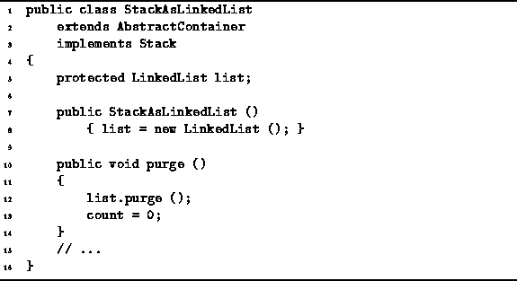

Data Structures and Algorithms
with Object-Oriented Design Patterns in Java
Data Structures and Algorithms
with Object-Oriented Design Patterns in Java
The definitions of the constructor and the purge methods of
the StackAsLinkedList class
are shown in Program  .
With a linked-list implementation,
it is not necessary to preallocate storage space for the objects in the stack.
Space is allocated dynamically and incrementally on the basis of demand.
.
With a linked-list implementation,
it is not necessary to preallocate storage space for the objects in the stack.
Space is allocated dynamically and incrementally on the basis of demand.

Program: StackAsLinkedList class constructor and purge methods.
The constructor simply creates an empty LinkedList and assigns it to the list field. Since an empty list can be created in constant time, the running time of the StackAsLinkedList constructor is O(1).
The purge method of the StackAsLinkedList class simply calls the purge method of the LinkedList class. The purge method of the LinkedList class discards all the elements of the list in constant time. Consequently, the running time of the purge method is also O(1).
 Copyright © 1998 by Bruno R. Preiss, P.Eng. All rights reserved.
Copyright © 1998 by Bruno R. Preiss, P.Eng. All rights reserved.